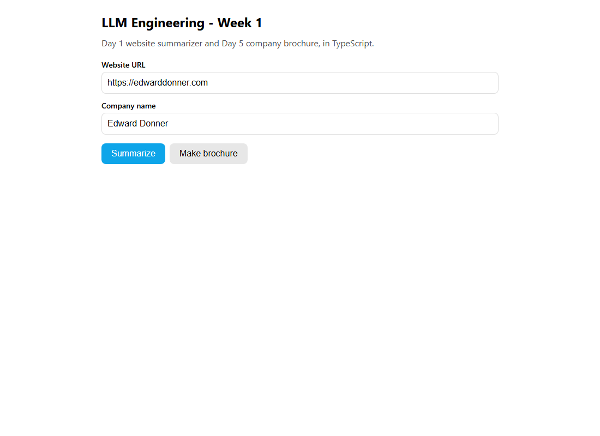

Week 1 · Project Build — Summarizer & Brochure, Step by Step
Build the Week 1 projects from an empty folder, step by step, in two stacks, one tab each: Python with uv, or React + Node + TypeScript. Every file is on this page, with a reason for every step.
Build it yourself · Python + uv and React + Node + TypeScriptThe day-pages walked through Week 1's ideas one lab at a time. This page is the hands-on build: you create the Week 1 project from an empty folder, typing the commands and making the files in order, so that at the end you have a working project on your own machine. Every file is shown in full on this page. The two main tools are the ones from Day 1 and Day 5:
- A website summarizer (Day 1): give it a web page, it scrapes the text and asks the model for a short summary.
- A company brochure writer (Day 5): it asks the model which links on the page matter (answering in JSON), then writes a short marketing brochure from the page contents.
The smaller Day 2 and Day 4 labs (calling the API two ways, seeing tokens, and the illusion of memory) are part of the same project, so they are built here too, as optional steps.
You can build it in either of two stacks. Choose one with the tabs in Build it step by step; each tab is complete on its own:
- Python + uv:
the course's own stack, as the guide's verified
week1-pyproject. It runs free on a local Ollama model and summarizes a saved web page, so it needs no paid key and no network. - React + Node +
TypeScript: the guide's port, the real
week1-tsproject. Terminal scripts for each lab, a small Hono API server, and a React page with Summarize and Make brochure buttons.
Build it step by step
Pick your stack with the tabs below. Each tab is a complete build from an empty folder in Visual Studio Code (no Jupyter notebook): every step shows the exact code to type or paste, and a Why that explains the reason for the step. The VS Code steps set up the editor, the Python environment or Node project, and one-key run and debug (F5). You never need another page to finish.
Build it in Python with uv (the course's stack)
This is the guide's verified week1-py project: the course's video-era Week 1 code (the same Website class, prompts and API calls), adapted to run free on a local Ollama model and to read a saved web page instead of the live internet. Step 10 shows how to switch it to OpenAI's gpt-4o-mini, as in the video. When you finish, your folder looks like this:
week1-py/
├── .vscode/
│ ├── extensions.json # recommended extensions
│ ├── settings.json # settings for this folder only
│ ├── tasks.json # Ctrl+Shift+B runs the open script
│ └── launch.json # F5 runs a script under the debugger
├── .env # which model to use and where it runs
├── pyproject.toml # created by uv; lists your dependencies
├── uv.lock # created by uv; pins exact versions
├── fixtures/
│ └── sample.html # a saved company home page to summarize
└── src/
├── scraper.py # the Website class: fetch, clean, keep title, text and links
├── day1_summarize.py # Day 1: the website summarizer
├── day5_brochure.py # Day 5: links as JSON, then a brochure
├── day2_chat_api.py # Day 2 (optional): the API two ways
├── day4_tokens.py # Day 4 (optional): seeing tokens
└── day4_memory.py # Day 4 (optional): the illusion of memory- Install VS Code and its Python extension (once per computer).
Download Visual Studio Code from
code.visualstudio.comand install it. Then add the extensions, either in the Extensions view (Ctrl+Shift+X, macOS Cmd+Shift+X, search the name, click Install) or from any terminal:code --install-extension ms-python.python # also installs Pylance and the Python Debugger code --install-extension mikestead.dotenv # colours .env filesOn macOS, if
codeis "command not found", open VS Code, press Cmd+Shift+P and run Shell Command: Install 'code' command in PATH. The Windows installer adds it for you (tick "Add to PATH" if it asks).VS Code gives you the editor, a terminal and a debugger in one window. The Python extension is what makes it understand Python: Pylance checks your imports and completes names as you type, and the Python Debugger lets you stop a script on any line. You do not need the Jupyter extension: the course's notebooks have become plain
.pyscripts here, and you run them like any program. - Install uv (once per computer).
Open a terminal and run:
# macOS / Linux curl -LsSf https://astral.sh/uv/install.sh | sh # Windows (PowerShell) powershell -ExecutionPolicy ByPass -c "irm https://astral.sh/uv/install.ps1 | iex" # close and reopen the terminal, then check it works uv --versionuv installs Python itself and every package the project needs, and keeps each project's packages separate from the others. The course uses it because it is fast and gives every student the same versions.
- Install Ollama and pull the model.
Install Ollama from
ollama.com, then:ollama pull llama3.2 ollama list # llama3.2 should be listedOllama runs an open-source model on your own computer and offers an OpenAI-compatible endpoint at
http://localhost:11434/v1. That means the normalopenaipackage talks to it unchanged, at no cost.llama3.2is small enough to run on an ordinary laptop. - Create the project folders.
uv init week1-py cd week1-py mkdir src fixturesuv creates
pyproject.toml,.python-version, aREADME.mdand a samplemain.py. Deletemain.py; the code goes insrc/.A folder with its own
pyproject.tomlis a self-contained project: anyone can copy it and rebuild exactly your setup withuv sync. Keeping code insrc/and test data infixtures/separates the program from what it works on. - Open the folder in VS Code.
From the terminal you are in (inside
week1-py):code .Or use File → Open Folder… and pick
week1-py. When VS Code asks whether you trust the authors, choose Yes (it is your own folder). Open the built-in terminal with Ctrl+` (the key left of 1, same on macOS) and type every command from now on there. Then create a folder named.vscodeand, inside it, this file:{ "recommendations": [ "ms-python.python", "ms-python.vscode-pylance", "ms-python.debugpy", "mikestead.dotenv" ] }Opening the folder, not a single file, tells VS Code where the project starts: it then finds
.venv,.envand the.vscodesettings on its own, and its terminal starts in the project folder, where everyuv run python src/…command on this page expects to be.extensions.jsonmakes VS Code offer these extensions to anyone who opens the folder, so a classmate (or you on another computer) gets the same setup with one click. - Add the five packages.
uv add openai python-dotenv beautifulsoup4 requests tiktokenEach package has one job:
openaiis the client for the model,python-dotenvreads settings from.env, requests downloads web pages, BeautifulSoup cleans the HTML, and tiktoken is used only by the optional Day 4 token lab.uv addinstalls them into the project's.venvand records them, so the setup can be rebuilt exactly. - Point VS Code at the project's
.venv.uv addcreated a.venvfolder with Python and the five packages inside. Tell VS Code to use it: press Ctrl+Shift+P (macOS Cmd+Shift+P), run Python: Select Interpreter and pick the entry marked.venv:# Windows .\.venv\Scripts\python.exe # macOS / Linux ./.venv/bin/pythonIf it is not in the list, choose Enter interpreter path… and type the path above. The status bar (bottom right) now shows the Python version with
.venv. Open a new terminal (the+in the terminal panel) and check which Python it uses:python -c "import sys; print(sys.executable)" # Windows: ...\week1-py\.venv\Scripts\python.exe # macOS / Linux: .../week1-py/.venv/bin/pythonIf PowerShell says running scripts is disabled on this system when the terminal opens, nothing is broken:
uv runworks without activating anything. To let VS Code activate the environment for you, runSet-ExecutionPolicy -Scope CurrentUser RemoteSignedonce and open a new terminal.VS Code can see several Pythons on your computer, and each has different packages. Pylance looks for
openai,bs4and the rest in the interpreter you select. With the wrong one, every import is underlined with "could not be resolved" and the debugger stops on the first import. With.venvselected, the editor, the terminal and the debugger all use exactly the packagesuv addinstalled. - Add the workspace settings:
.vscode/settings.json.{ "python.terminal.activateEnvironment": true, "files.exclude": { "**/__pycache__": true }, "search.exclude": { "**/.venv": true, "uv.lock": true } }python.terminal.activateEnvironmentactivates.venvin every new terminal. Why: plainpython src/day1_summarize.pythen works too, not onlyuv run python src/day1_summarize.py.files.excludehides the__pycache__folders in the Explorer. Why: Python creates one insrc/the first time a script importsscraper.py; you never edit it.search.excludekeeps.venvanduv.lockout of Ctrl+Shift+F searches (macOS Cmd+Shift+F). Why: otherwise a search forclientreturns thousands of hits inside the installed packages.
There is no
python.analysis.extraPathsline: Pylance already looks inside a top-levelsrc/folder, sofrom scraper import load_localresolves without help, just as it does when Python runs the script.Settings in
.vscode/settings.jsonapply to this folder only, so they never change your other projects, and they travel with the project when you copy or share it. - Check
pyproject.toml.Open
pyproject.toml. Yours has your folder's name and areadmeline, and may show version numbers; the dependency list is what matters. This is the verified project's file:[project] name = "llm-eng-week1" version = "0.1.0" description = "Week 1 of Ed Donner's LLM Engineering course, runnable against a local Ollama (no paid keys)." requires-python = ">=3.12" dependencies = [ "openai", "python-dotenv", "beautifulsoup4", "requests", "tiktoken", ] [tool.uv] # Nothing special; uv will provision Python 3.12 and a .venv on `uv sync`.This file is the project's shopping list. If a package is missing here,
uv runcannot import it, so it is worth a ten-second check before writing any code. - Create
.env.Create a file named exactly
.envin the project folder with this content (it is the project's.env.example):# Copy this file to .env and adjust if needed. # Everything runs against a LOCAL Ollama server - no paid API keys required. # Base URL of Ollama's OpenAI-compatible endpoint. OLLAMA_BASE_URL=http://localhost:11434/v1 # The local model to use (must be pulled: `ollama pull llama3.2`). MODEL=llama3.2echo ".env" >> .gitignoreThe scripts read
OLLAMA_BASE_URLandMODELfrom here, with the same values as defaults, so changing the model later means editing one line instead of five files..envis where keys go when you use a paid provider, which is why it stays out of git.Use OpenAI instead, as in the video.Put
OPENAI_API_KEY=sk-proj-...in.envand setMODEL=gpt-4o-mini. Then in each script change the client line,client = OpenAI(base_url=BASE_URL, api_key="ollama")(line 19 ofday1_summarize.pyin step 13, line 21 ofday5_brochure.pyin step 21), toclient = OpenAI(), which reads the key from the environment. Everything else stays the same. - Save a web page to summarize:
fixtures/sample.html.<!doctype html> <html lang="en"> <head> <meta charset="utf-8"> <title>Acme Robotics - Home</title> <style> body { font-family: sans-serif; margin: 2rem; } .hero { color: #0a7; } </style> <script> // This script should be stripped out before summarizing. console.log("tracking pixel fired"); window.analytics = { track: function () {} }; </script> </head> <body> <nav> <a href="/">Home</a> <a href="/about">About</a> <a href="/careers">Careers</a> <a href="/contact">Contact</a> <a href="https://twitter.com/acme">Twitter</a> <a href="/privacy">Privacy Policy</a> </nav> <main> <h1 class="hero">Acme Robotics</h1> <p> Acme Robotics builds friendly warehouse robots that help small businesses pack and ship orders faster. Founded in 2019, we are a team of 40 engineers and designers based in Portland, Oregon. </p> <h2>What we do</h2> <p> Our flagship robot, the PackBot One, can sort up to 2,000 parcels an hour. Customers include regional grocers, craft marketplaces, and a growing number of online toy stores. </p> <h2>Latest news</h2> <ul> <li>October 2026: We closed a $12M Series A to expand into Canada.</li> <li>September 2026: PackBot One won the Northwest Automation Award.</li> </ul> <h2>Culture</h2> <p> We value curiosity, kindness, and shipping small improvements every week. Everyone gets Fridays for learning and side projects. </p> </main> <footer> <p>(c) 2026 Acme Robotics. Portland, OR.</p> </footer> </body> </html>A saved page makes the project run with no network and gives the same input every time, so you can tell whether a change to your prompt made the summary better. It deliberately contains a
<script>, a<style>and a navigation bar, the noise the scraper has to remove, and links (one of them a Privacy page) for the brochure's link-picking step. - Write the scraper:
src/scraper.py.# Shared scraping helper for Week 1. # A Website class (the course's version, requests + BeautifulSoup) plus a # load_local(path) helper so the labs can run fully OFFLINE against a fixture. import os import requests from bs4 import BeautifulSoup # Some websites refuse a request that has no User-Agent header, so we send a # normal browser one (same as the course). HEADERS = { "User-Agent": "Mozilla/5.0 (Windows NT 10.0; Win64; x64) AppleWebKit/537.36 " "(KHTML, like Gecko) Chrome/117.0.0.0 Safari/537.36" } class Website: """A scraped website: its url, title, cleaned body text, and links.""" def __init__(self, url, html=None): """Build from a live URL (html=None) or from pre-fetched HTML. Passing `html` lets us parse a local file without any network access. """ self.url = url if html is None: response = requests.get(url, headers=HEADERS) html = response.content self.body = html soup = BeautifulSoup(self.body, "html.parser") self.title = soup.title.string if soup.title else "No title found" if soup.body: for irrelevant in soup.body(["script", "style", "img", "input"]): irrelevant.decompose() self.text = soup.body.get_text(separator="\n", strip=True) else: self.text = "" links = [link.get("href") for link in soup.find_all("a")] self.links = [link for link in links if link] def get_contents(self): return f"Webpage Title:\n{self.title}\nWebpage Contents:\n{self.text}\n\n" def load_local(path): """Parse a local HTML file and return a Website (no network required). The url is set to a file:// URL so downstream code that joins relative links still has a sensible base. """ with open(path, "rb") as f: html = f.read() url = "file:///" + os.path.abspath(path).replace("\\", "/") return Website(url, html=html)Both tools need the same thing from a page: its title, its readable text and its links. Putting that in one
Websiteclass means the summarizer and the brochure share one tested piece of code.- Lines 12–15,
HEADERS. Why: some websites refuse requests that do not look like a browser, so we send a normal browser's User-Agent, as the course does. - Lines 21–30, fetch or accept HTML. With no
htmlit downloads the URL; withhtmlit uses what you give it. Why: the same class works on a live site (Website("https://edwarddonner.com")) and on a saved file. - Lines 32–39, clean the page. Remove
script,style,imgandinputtags, then take the text one line per element. Why: the model pays for every token and is distracted by code and markup; only the readable text helps the summary. - Lines 41–42, the links. Why: the Day 5 brochure asks the model to choose from them; empty
hrefs are dropped. - Lines 44–45,
get_contents(). Why: one tidy "title + contents" string to paste into a prompt. - Lines 48–57,
load_local(). Reads a file and builds aWebsitewith afile:///URL. Why: relative links like/aboutcan still be joined to a full address later.
- Lines 12–15,
- Start the summarizer,
src/day1_summarize.py: imports and the client.# Day 1 - Website Summarizer, offline edition. # Same idea as the course ("Reader's Digest of the internet"), but it summarizes # a LOCAL HTML fixture via a local Ollama model, so it needs no network and no # paid API key. import os from dotenv import load_dotenv from openai import OpenAI from scraper import load_local load_dotenv(override=True) BASE_URL = os.getenv("OLLAMA_BASE_URL", "http://localhost:11434/v1") MODEL = os.getenv("MODEL", "llama3.2") # With Ollama the api_key is ignored, but the client still requires one. client = OpenAI(base_url=BASE_URL, api_key="ollama")load_dotenv(override=True)copies.envinto the environment, andoverride=Truemakes the file win over an old value already set on your computer. The client is the standardOpenAIclass pointed at Ollama; Ollama ignores the key, but the class insists on having one, so any text works. - Find the saved page and write the system prompt.
HERE = os.path.dirname(os.path.abspath(__file__)) FIXTURE = os.path.join(HERE, "..", "fixtures", "sample.html") system_prompt = ( "You are an assistant that analyzes the contents of a website and provides a " "short summary, ignoring text that might be navigation related. Respond in markdown." )The path is built from the script's own location, so the script finds the fixture whatever folder you run it from. The system prompt sets the model's job once: summarize, skip navigation text, answer in Markdown.
- Build the user prompt and the message list.
def user_prompt_for(website): user_prompt = f"You are looking at a website titled {website.title}\n" user_prompt += ( "The contents of this website is as follows; please provide a short " "summary of this website in markdown. If it includes news or " "announcements, then summarize these too.\n\n" ) user_prompt += website.text return user_prompt def messages_for(website): return [ {"role": "system", "content": system_prompt}, {"role": "user", "content": user_prompt_for(website)}, ]The user prompt is the actual request: the page title, an instruction (including "summarize news too") and the page text.
messages_forwraps both prompts in the list of{"role", "content"}messages that every Chat Completions call expects. - Add
main(): scrape, call the model, print.def main(): website = load_local(FIXTURE) print(f"Scraped local fixture: {website.title}") print(f"({len(website.text)} chars of body text, {len(website.links)} links)\n") response = client.chat.completions.create( model=MODEL, messages=messages_for(website), max_tokens=250, ) print("--- Summary ---") print(response.choices[0].message.content) if __name__ == "__main__": main()It prints what was scraped first, so you can see the scraper worked before the model is involved. Then one call to
client.chat.completions.createdoes the work;max_tokens=250keeps the answer short so a small local model replies quickly. The course runs this in Jupyter and shows the answer withdisplay(Markdown(...)); as a plain script,printdoes the job. - Check your finished
day1_summarize.pyagainst the complete file.# Day 1 - Website Summarizer, offline edition. # Same idea as the course ("Reader's Digest of the internet"), but it summarizes # a LOCAL HTML fixture via a local Ollama model, so it needs no network and no # paid API key. import os from dotenv import load_dotenv from openai import OpenAI from scraper import load_local load_dotenv(override=True) BASE_URL = os.getenv("OLLAMA_BASE_URL", "http://localhost:11434/v1") MODEL = os.getenv("MODEL", "llama3.2") # With Ollama the api_key is ignored, but the client still requires one. client = OpenAI(base_url=BASE_URL, api_key="ollama") HERE = os.path.dirname(os.path.abspath(__file__)) FIXTURE = os.path.join(HERE, "..", "fixtures", "sample.html") system_prompt = ( "You are an assistant that analyzes the contents of a website and provides a " "short summary, ignoring text that might be navigation related. Respond in markdown." ) def user_prompt_for(website): user_prompt = f"You are looking at a website titled {website.title}\n" user_prompt += ( "The contents of this website is as follows; please provide a short " "summary of this website in markdown. If it includes news or " "announcements, then summarize these too.\n\n" ) user_prompt += website.text return user_prompt def messages_for(website): return [ {"role": "system", "content": system_prompt}, {"role": "user", "content": user_prompt_for(website)}, ] def main(): website = load_local(FIXTURE) print(f"Scraped local fixture: {website.title}") print(f"({len(website.text)} chars of body text, {len(website.links)} links)\n") response = client.chat.completions.create( model=MODEL, messages=messages_for(website), max_tokens=250, ) print("--- Summary ---") print(response.choices[0].message.content) if __name__ == "__main__": main()Building in parts helps you understand it; comparing with the complete file catches the small slips (a missing bracket in the message list, a wrong indent) that would stop it from running.
- Add one-key run and debug:
.vscode/tasks.jsonand.vscode/launch.json.A task runs a command for you; a launch configuration starts a script under the debugger.
{ "version": "2.0.0", "tasks": [ { "label": "Run the open script (uv run python <file>)", "type": "shell", "command": "uv", "args": ["run", "python", "${file}"], "group": { "kind": "build", "isDefault": true }, "problemMatcher": [] }, { "label": "Day 1: summarizer (uv run python src/day1_summarize.py)", "type": "shell", "command": "uv run python src/day1_summarize.py", "problemMatcher": [] }, { "label": "Day 5: brochure (uv run python src/day5_brochure.py)", "type": "shell", "command": "uv run python src/day5_brochure.py", "problemMatcher": [] }, { "label": "Install packages (uv sync)", "type": "shell", "command": "uv sync", "problemMatcher": [] } ] }{ "version": "0.2.0", "configurations": [ { "name": "Day 1: summarizer (day1_summarize.py)", "type": "debugpy", "request": "launch", "program": "${workspaceFolder}/src/day1_summarize.py", "cwd": "${workspaceFolder}", "envFile": "${workspaceFolder}/.env", "console": "integratedTerminal", "justMyCode": true }, { "name": "Day 5: brochure (day5_brochure.py)", "type": "debugpy", "request": "launch", "program": "${workspaceFolder}/src/day5_brochure.py", "cwd": "${workspaceFolder}", "envFile": "${workspaceFolder}/.env", "console": "integratedTerminal", "justMyCode": true }, { "name": "Python: the file that is open", "type": "debugpy", "request": "launch", "program": "${file}", "cwd": "${workspaceFolder}", "envFile": "${workspaceFolder}/.env", "console": "integratedTerminal" } ] }"isDefault": truemakes Run the open script the default build task. Why: open any script insrc/and press Ctrl+Shift+B (macOS Cmd+Shift+B): it runsuv run pythonon that file, so the same key works for Day 1, Day 5 and the optional labs. The fixed Day 1 and Day 5 tasks are in Terminal → Run Task…."args"instead of one command string in the first task. Why: VS Code then quotes the file path for you, so a folder name with spaces still works."type": "debugpy"uses the Python Debugger with the interpreter you selected, so the.venvpackages. Why: the debugger needs a real Python to start;uv runis a terminal command it cannot pause."program"points at the script insidesrc/. Why: Python adds the script's own folder to its search path, sofrom scraper import load_localworks under the debugger exactly as withuv run."cwd": "${workspaceFolder}"starts the script in the project folder. Why: that is where you run every command on this page. The scripts findfixtures/sample.htmlfrom their own location, so it is not strictly needed today, but any file you later open with a relative path will be found the same way in the terminal and in the debugger."envFile"loads.envinto the debugged script. Why:load_dotenv()does this too, but this wayMODELandOLLAMA_BASE_URLare there even in a test file that never calls it.- The third configuration debugs whatever
.pyfile is open. Why: it covers the optional Day 2 and Day 4 labs without one configuration per file.
You run each script many times while you change a prompt and compare the output. One key saves the typing, and the launch configuration is what makes F5 work in the next steps. Both files hold no secrets, so they can go into git with the code.
- Run the summarizer.
uv run python src/day1_summarize.pyA real run against
llama3.2printed this (your wording will differ):Scraped local fixture: Acme Robotics - Home (812 chars of body text, 6 links) --- Summary --- **Summary of Acme Robotics - Home** ===================================================== * **Overview**: Acme Robotics is a technology company that develops warehouse robots, specifically the PackBot One, to help small businesses pack and ship orders more efficiently. * **Founding**: Founded in 2019 with a team of 40 engineers and designers based in Portland, Oregon. * **Flagship Product**: The PackBot One can sort up to 2,000 parcels per hour and is used by regional grocers, craft marketplaces, and online toy stores. * **Recent News**: * **Series A Funding** (October 2026) * Closed a $12M Series A investment to expand into Canada and further grow the business. * **Awards and Recognition** (September 2026) * PackBot One won the Northwest Automation Award, a testament to its performance and capabilities. **Corporate Values** ================== * **Culture**: Acme Robotics values curiosity, kindness, and continuous improvement (shipping small improvements weekly). The company prioritizes professional development and work-life balance, with every Friday dedicated to learning and side projects.uv runstarts Python inside the project's own environment, so there is nothing to activate first. The first two lines prove the scraper removed the script and style (812 characters of text, 6 links); the rest proves the model call works. - Debug it in VS Code: F5 and a breakpoint.
- Check that Ollama is running (
ollama listanswers; on Windows and macOS the Ollama app keeps it running in the background). - Open
src/day1_summarize.pyand click in the margin left of line 58,print("--- Summary ---"), insidedef main()(line 48). A red dot appears: that is a breakpoint. - Open the Run and Debug view (Ctrl+Shift+D, macOS Cmd+Shift+D), choose Day 1: summarizer (day1_summarize.py) at the top and press F5 (on a Mac keyboard you may need fn+F5).
- The terminal prints
Scraped local fixture: Acme Robotics - Homeand the character count, then VS Code pauses on line 58, after the model has answered but before anything is printed. - In the Variables panel, open
website:title, the cleanedtextand the sixlinksare what the scraper kept. Openresponse→choices→0→message→contentto read the summary before it is printed, andresponse.usageto see how many tokens the call used. Press F10 to run one line, F5 to continue and Shift+F5 to stop.
The brochure works the same way: in
src/day5_brochure.pyput a breakpoint on line 62,return json.loads(...)insidedef get_links, start Day 5: brochure (day5_brochure.py), and look atresponse.choices[0].message.content: it is the raw JSON text the model wrote, before Python turns it into a dictionary. The ▶ button at the top right of the editor (Run Python File) is the quick way to run the open file without the debugger.Print statements show what you thought to print; the debugger shows everything. Pausing between the model call and the print lets you see exactly what went into the prompt (the scraped text) and what came back (the reply and its token count). When a summary looks wrong, this tells you at once whether the scraper or the prompt is to blame.
- Check that Ollama is running (
- Start the brochure,
src/day5_brochure.py: imports and the client.# Day 5 - The company brochure, offline edition. # A first taste of an "agentic" multi-step workflow, two LLM calls: # 1) ask the model which links on the page are relevant, answering in JSON # 2) ask it to write a short markdown brochure from the page contents # Runs on the LOCAL fixture via a local Ollama model - no network, no paid key. import json import os from urllib.parse import urljoin from dotenv import load_dotenv from openai import OpenAI from scraper import load_local load_dotenv(override=True) BASE_URL = os.getenv("OLLAMA_BASE_URL", "http://localhost:11434/v1") MODEL = os.getenv("MODEL", "llama3.2") client = OpenAI(base_url=BASE_URL, api_key="ollama") HERE = os.path.dirname(os.path.abspath(__file__)) FIXTURE = os.path.join(HERE, "..", "fixtures", "sample.html")Same setup as Day 1, plus
jsonto read the model's JSON answer andurljointo turn relative links into full addresses. Each script sets up its own client so it can run on its own. - Add the link-picking prompts.
# --- Step 1: ask the model which links matter, answering in strict JSON ------- link_system_prompt = """You are provided with a list of links found on a webpage. \ You can decide which of the links would be most relevant to include in a brochure \ about the company, such as an About page or a Careers/Jobs page. Respond in JSON like this example: { "links": [ {"type": "about page", "url": "https://full.url/goes/here/about"}, {"type": "careers page", "url": "https://another.full.url/careers"} ] } Do not include Terms of Service, Privacy, or email links.""" def get_links_user_prompt(website): user_prompt = f"Here is the list of links on the website of {website.url} - " user_prompt += ( "please decide which of these are relevant web links for a brochure about " "the company, and respond with the full URL in JSON format. Do not include " "Terms of Service, Privacy, or email links.\n" ) user_prompt += "Links (some might be relative links):\n" user_prompt += "\n".join(website.links) return user_promptThe system prompt shows the model the exact JSON shape to answer with (one-shot prompting), because code is going to read the answer. The user prompt lists every link on the page and says which kinds to leave out (terms, privacy, email).
- Add
get_links(): ask for JSON and parse it.def get_links(website): response = client.chat.completions.create( model=MODEL, messages=[ {"role": "system", "content": link_system_prompt}, {"role": "user", "content": get_links_user_prompt(website)}, ], response_format={"type": "json_object"}, max_tokens=300, ) return json.loads(response.choices[0].message.content)response_format={"type": "json_object"}switches on JSON mode, so the model must answer with valid JSON andjson.loadscan turn it straight into a Python dictionary. This is the first time the program, not a person, uses the model's answer. - Add the brochure system prompt.
# --- Step 2: write the brochure ----------------------------------------------- brochure_system_prompt = ( "You are an assistant that analyzes the contents of a company website and " "creates a SHORT brochure about the company for prospective customers, " "investors and recruits. Respond in markdown. Keep it under 150 words. " "Include company culture, customers and careers if you have the information." )A second role for the second call: write a short brochure for customers, investors and recruits, in Markdown, including culture and careers when the page has them. "Under 150 words" keeps a small local model fast.
- Add
main(): the two calls in a row.def main(): website = load_local(FIXTURE) print(f"Landing page: {website.title}") print(f"Found {len(website.links)} links on the page.\n") # Step 1 print("--- Step 1: model picks relevant links (JSON) ---") links = get_links(website) print(json.dumps(links, indent=2)) # Resolve the chosen links to absolute URLs (offline: we just show them). chosen = [urljoin(website.url, item["url"]) for item in links.get("links", [])] print("\nResolved chosen URLs:") for url in chosen: print(f" {url}") # Step 2 - we only have the one local page, so we brief the model on it. user_prompt = ( "You are looking at a company called Acme Robotics.\n" "Here are the contents of its landing page; use this to build a short " "brochure of the company in markdown.\n\n" + website.get_contents() )[:4000] print("\n--- Step 2: brochure ---") response = client.chat.completions.create( model=MODEL, messages=[ {"role": "system", "content": brochure_system_prompt}, {"role": "user", "content": user_prompt}, ], max_tokens=320, ) print(response.choices[0].message.content) if __name__ == "__main__": main()Call 1 picks the links and
urljointurns them into full URLs. Call 2 writes the brochure from the page contents, cut to 4,000 characters to stay inside the model's context window. Chaining two calls, where the first one's answer shapes the second, is the first taste of an agentic workflow. In the video the brochure also downloads each chosen page and streams its answer; this offline edition has only the one saved page, so it lists the chosen links and briefs the model on the landing page. - Check your finished
day5_brochure.pyagainst the complete file.# Day 5 - The company brochure, offline edition. # A first taste of an "agentic" multi-step workflow, two LLM calls: # 1) ask the model which links on the page are relevant, answering in JSON # 2) ask it to write a short markdown brochure from the page contents # Runs on the LOCAL fixture via a local Ollama model - no network, no paid key. import json import os from urllib.parse import urljoin from dotenv import load_dotenv from openai import OpenAI from scraper import load_local load_dotenv(override=True) BASE_URL = os.getenv("OLLAMA_BASE_URL", "http://localhost:11434/v1") MODEL = os.getenv("MODEL", "llama3.2") client = OpenAI(base_url=BASE_URL, api_key="ollama") HERE = os.path.dirname(os.path.abspath(__file__)) FIXTURE = os.path.join(HERE, "..", "fixtures", "sample.html") # --- Step 1: ask the model which links matter, answering in strict JSON ------- link_system_prompt = """You are provided with a list of links found on a webpage. \ You can decide which of the links would be most relevant to include in a brochure \ about the company, such as an About page or a Careers/Jobs page. Respond in JSON like this example: { "links": [ {"type": "about page", "url": "https://full.url/goes/here/about"}, {"type": "careers page", "url": "https://another.full.url/careers"} ] } Do not include Terms of Service, Privacy, or email links.""" def get_links_user_prompt(website): user_prompt = f"Here is the list of links on the website of {website.url} - " user_prompt += ( "please decide which of these are relevant web links for a brochure about " "the company, and respond with the full URL in JSON format. Do not include " "Terms of Service, Privacy, or email links.\n" ) user_prompt += "Links (some might be relative links):\n" user_prompt += "\n".join(website.links) return user_prompt def get_links(website): response = client.chat.completions.create( model=MODEL, messages=[ {"role": "system", "content": link_system_prompt}, {"role": "user", "content": get_links_user_prompt(website)}, ], response_format={"type": "json_object"}, max_tokens=300, ) return json.loads(response.choices[0].message.content) # --- Step 2: write the brochure ----------------------------------------------- brochure_system_prompt = ( "You are an assistant that analyzes the contents of a company website and " "creates a SHORT brochure about the company for prospective customers, " "investors and recruits. Respond in markdown. Keep it under 150 words. " "Include company culture, customers and careers if you have the information." ) def main(): website = load_local(FIXTURE) print(f"Landing page: {website.title}") print(f"Found {len(website.links)} links on the page.\n") # Step 1 print("--- Step 1: model picks relevant links (JSON) ---") links = get_links(website) print(json.dumps(links, indent=2)) # Resolve the chosen links to absolute URLs (offline: we just show them). chosen = [urljoin(website.url, item["url"]) for item in links.get("links", [])] print("\nResolved chosen URLs:") for url in chosen: print(f" {url}") # Step 2 - we only have the one local page, so we brief the model on it. user_prompt = ( "You are looking at a company called Acme Robotics.\n" "Here are the contents of its landing page; use this to build a short " "brochure of the company in markdown.\n\n" + website.get_contents() )[:4000] print("\n--- Step 2: brochure ---") response = client.chat.completions.create( model=MODEL, messages=[ {"role": "system", "content": brochure_system_prompt}, {"role": "user", "content": user_prompt}, ], max_tokens=320, ) print(response.choices[0].message.content) if __name__ == "__main__": main()The JSON example inside the triple-quoted prompt is easy to break with a stray quote or brace; comparing with the complete file catches it before the model sees a broken instruction.
- Run the brochure.
uv run python src/day5_brochure.pyA real run against
llama3.2printed this (your wording will differ):Landing page: Acme Robotics - Home Found 6 links on the page. --- Step 1: model picks relevant links (JSON) --- { "links": [ { "type": "about page", "url": "https://acme.com/about" }, { "type": "careers page", "url": "https://acme.com/careers" }, { "type": "contact page", "url": "https://acme.com/contact" } ] } Resolved chosen URLs: https://acme.com/about https://acme.com/careers https://acme.com/contact --- Step 2: brochure --- # Acme Robotics A Warehouse Automation Pioneer We're a team of 40 engineers and designers based in Portland, Oregon, dedicated to building solutions that make small businesses more efficient. Our friendly warehouse robots help deliver fast and accurate order fulfillment. ## What We Do * Build friendly warehouse robots that pack and ship orders faster * Our flagship robot, the PackBot One, sorts up to 2,000 parcels per hour * Customers include regional grocers, craft marketplaces, and online toy stores ## Join Our Team We value: * Curiosity * Kindness * Shipping small improvements every week * Fridays for learning and side projects ## StayConnected Follow us on Twitter: [Twitter link] ## Stay Informed Learn about our latest news and updates: * Closed a $12M Series A in October 2026 * Won the Northwest Automation Award in September 2026 ### Visit Our Website Learn more about our robots and our mission to revolutionize warehouse automation. [Acme Robotics website link] (c) 2026 Acme Robotics. Portland, OR.You can see both calls: the JSON the model chose (About, Careers, Contact, and no Privacy page) and the brochure. Notice the model invented the domain
acme.comfor the relative links; checking the model's structured output, rather than trusting it, is a habit worth starting now. - Optional: the Day 2 lab,
src/day2_chat_api.py.# Day 2 - The Chat Completions API, two ways, against a LOCAL Ollama model. # This is the lab that genuinely uses a local model in the course. # 1) a raw requests.post to the OpenAI-compatible endpoint # 2) the same call through the openai client library # Both hit http://localhost:11434 - no paid key, no network beyond localhost. import os import requests from dotenv import load_dotenv from openai import OpenAI load_dotenv(override=True) BASE_URL = os.getenv("OLLAMA_BASE_URL", "http://localhost:11434/v1") MODEL = os.getenv("MODEL", "llama3.2") PROMPT = "Tell me a fun fact in one short sentence." # --- 1. Raw HTTP endpoint ----------------------------------------------------- # This is all the openai library does under the hood: an HTTP POST with JSON. headers = {"Authorization": "Bearer ollama", "Content-Type": "application/json"} payload = { "model": MODEL, "messages": [{"role": "user", "content": PROMPT}], "max_tokens": 80, } response = requests.post(f"{BASE_URL}/chat/completions", headers=headers, json=payload) raw_reply = response.json()["choices"][0]["message"]["content"] print("--- 1. raw requests.post ---") print(raw_reply) # --- 2. The same call with the openai client library ------------------------- # Change base_url + api_key and the identical client works against Ollama. client = OpenAI(base_url=BASE_URL, api_key="ollama") completion = client.chat.completions.create( model=MODEL, messages=[{"role": "user", "content": PROMPT}], max_tokens=80, ) print("\n--- 2. openai client library ---") print(completion.choices[0].message.content)uv run python src/day2_chat_api.pyIt makes the same request twice: once as a raw HTTP POST with
requests, once through theopenailibrary. Seeing that both work shows the library is only a thin wrapper around an HTTP call, which is why it can talk to Ollama, OpenAI or any compatible endpoint. - Optional: the Day 4 token lab,
src/day4_tokens.py.# Day 4 - Seeing tokens with tiktoken. # tiktoken is OpenAI's tokenizer. It turns text into the integer token ids a model # actually reads, and back again. It runs locally - no API key and no cost. # # We set TIKTOKEN_CACHE_DIR (if not already set) so tiktoken uses the bundled # cache and never tries to download the encoding over the network. import os # Fall back to an env var the runner sets; this is just a safety net. os.environ.setdefault("TIKTOKEN_CACHE_DIR", os.environ.get("TIKTOKEN_CACHE_DIR", "")) import tiktoken # o200k_base is the encoding used by the GPT-4o family of models. encoding = tiktoken.get_encoding("o200k_base") text = "Hi my name is Ed and I like banoffee pie" tokens = encoding.encode(text) print(tokens) print(f"{len(text)} characters became {len(tokens)} tokens") for token_id in tokens: print(f"{token_id} = {encoding.decode([token_id])!r}")uv run python src/day4_tokens.pyThe sentence becomes 11 tokens, and
banoffeeis split into' ban'and'offee'.Models read tokens, not characters or words, and you pay per token.
o200k_baseis the encoding of the GPT-4o family. The first run downloads the encoding file; setTIKTOKEN_CACHE_DIRto a folder that already holds it if you must work offline. - Optional: the Day 4 memory lab,
src/day4_memory.py.# Day 4 - The illusion of memory, against a LOCAL Ollama model. # Every call to an LLM is stateless: it remembers nothing between calls. We create # the feeling of memory by sending the whole conversation back every time. import os from dotenv import load_dotenv from openai import OpenAI load_dotenv(override=True) BASE_URL = os.getenv("OLLAMA_BASE_URL", "http://localhost:11434/v1") MODEL = os.getenv("MODEL", "llama3.2") client = OpenAI(base_url=BASE_URL, api_key="ollama") def ask(messages): response = client.chat.completions.create( model=MODEL, messages=messages, max_tokens=80, ) return response.choices[0].message.content # First call: we tell it our name. print("--- Call 1: introduce myself ---") print(ask([ {"role": "system", "content": "You are a helpful assistant. Answer in one short sentence."}, {"role": "user", "content": "Hi! I'm Ed!"}, ])) # Second call, on its own: it has no idea who we are - call 1 is forgotten. print("\n--- Call 2: ask my name with NO history (it forgets) ---") print(ask([ {"role": "system", "content": "You are a helpful assistant. Answer in one short sentence."}, {"role": "user", "content": "What's my name?"}, ])) # Fix: replay the whole conversation, including the assistant's earlier reply. print("\n--- Call 3: ask my name WITH history replayed (it remembers) ---") print(ask([ {"role": "system", "content": "You are a helpful assistant. Answer in one short sentence."}, {"role": "user", "content": "Hi! I'm Ed!"}, {"role": "assistant", "content": "Hi Ed! How can I help you today?"}, {"role": "user", "content": "What's my name?"}, ]))uv run python src/day4_memory.pyCall 2 does not know your name, because every API call is stateless. Call 3 does, because the whole conversation is sent again. That is how every chatbot "remembers": it replays the history on each call.
python src/day1_summarize.py instead of uv run python src/day1_summarize.py uses the wrong Python and will not find the installed packages. A Connection refused error means Ollama is not running: start the Ollama app, or run ollama serve. A .env saved as .env.txt (Notepad does this) is never read; in the Save as dialog choose All Files.Build it in React + Node + TypeScript
This tab rebuilds the same tools as the real week1-ts/ project. It uses OpenAI's gpt-4o-mini as in the video (Ollama works too; see step 10), scrapes live websites with node-html-parser instead of BeautifulSoup, runs each lab as a terminal script with tsx, and adds a small Hono server and a React page bundled by Vite. A browser must never hold your API key, which is why the model is called from the server. When you finish, your folder looks like this:
week1-ts/
├── .vscode/
│ ├── extensions.json # recommended extensions
│ ├── settings.json # settings for this folder only
│ ├── tasks.json # Ctrl+Shift+B type-checks; Run Task starts the servers
│ └── launch.json # F5 runs a lab, the servers or the page under the debugger
├── .env # your keys - never commit this file
├── package.json # dependencies and the npm scripts
├── tsconfig.json # TypeScript settings
├── src/
│ ├── scrape.ts # shared scraper (the Website twin)
│ ├── day1_summarize.ts # Day 1
│ ├── day5_brochure.ts # Day 5
│ ├── day2_chat_api.ts # Day 2 (optional)
│ ├── day4_tokens.ts # Day 4 (optional)
│ └── day4_memory.ts # Day 4 (optional)
├── server/
│ └── index.ts # Hono API: /api/summarize, /api/brochure
└── web/
├── index.html # the page shell
├── vite.config.ts # dev server + proxy to the API
└── src/
├── main.tsx # mounts React
├── App.tsx # the page
├── styles.css
└── vite-env.d.tsweek1-ts/ project. Highlighted files are the source you write; the rest
(node_modules, lock files) is created by npm. One package holds the scripts, the server
and the web app together.- Install VS Code and its extensions (once per computer).
Download Visual Studio Code from
code.visualstudio.comand install it. TypeScript support and the JavaScript debugger are built in; add two extensions in the Extensions view (Ctrl+Shift+X, macOS Cmd+Shift+X) or from any terminal:code --install-extension esbenp.prettier-vscode # formats code on demand code --install-extension mikestead.dotenv # colours .env filesOn macOS, if
codeis "command not found", press Cmd+Shift+P in VS Code and run Shell Command: Install 'code' command in PATH. The Windows installer adds it for you.VS Code already understands
.tsand.tsxfiles: it underlines type errors while you type and can debug Node and the browser without any extension. Prettier gives every file the same layout when you ask it to, and DotENV makes.envreadable. There is no ESLint extension here because this project does not set up ESLint; the type-check (npm run typecheck) is its safety net. No Jupyter either: every lab is a.tsscript you run with one command. - Install Node.js (once per computer).
Install the current LTS version from
nodejs.org(version 22 or newer), then check it:node -v npm -vNode.js runs TypeScript outside the browser, where the scripts and the server live. Version 22 or newer provides the built-in
fetchthe scraper uses andimport.meta.dirname, which the Vite config needs. npm comes with it and installs packages, the job uv does in the Python tab. - Create the project folder.
mkdir week1-ts cd week1-ts npm init -ynpm init -ycreatespackage.json, the list of dependencies and scripts, likepyproject.tomlin Python. You will replace its contents in step 7. - Open the folder in VS Code.
code .Or use File → Open Folder… and pick
week1-ts. Choose Yes when VS Code asks whether you trust the authors. Open the built-in terminal with Ctrl+` (same on macOS) and type every command from now on there. Create a folder named.vscodeand, inside it, this file:{ "recommendations": [ "esbenp.prettier-vscode", "mikestead.dotenv" ] }Opening the folder makes it the workspace: VS Code reads its
tsconfig.jsonandnode_modulesto check your code, and the terminal starts in the right place fornpm.extensions.jsonmakes VS Code offer the two extensions to anyone who opens the folder. - Install the runtime packages.
npm add openai hono @hono/node-server dotenv node-html-parser marked gpt-tokenizer zodopenaiis the JavaScript version of the same SDK.honoand@hono/node-serverare a tiny web server.node-html-parserreplaces BeautifulSoup.markedturns the model's Markdown into HTML in the browser. gpt-tokenizer replaces tiktoken for the Day 4 lab.zodchecks request bodies, anddotenvreads.env. - Install the development tools.
npm add -D tsx typescript vite @vitejs/plugin-react react react-dom @types/node @types/react @types/react-domtsxruns a.tsfile directly,typescriptchecks types, and Vite with its React plugin serves and bundles the page. React is a dev dependency because Vite bundles it into the page; the server never imports it. The@typespackages teach TypeScript what Node and React look like. - Set up
package.json.Replace the contents of
package.jsonwith this file (your version numbers may be newer):{ "name": "llmeng-week1-ts", "private": true, "version": "0.1.0", "type": "module", "description": "TypeScript + React port of Week 1 of Ed Donner's LLM Engineering course", "scripts": { "day1": "tsx src/day1_summarize.ts", "day2": "tsx src/day2_chat_api.ts", "day4-tokens": "tsx src/day4_tokens.ts", "day4-memory": "tsx src/day4_memory.ts", "day5": "tsx src/day5_brochure.ts", "api": "tsx server/index.ts", "web": "vite --config web/vite.config.ts", "typecheck": "tsc --noEmit -p tsconfig.json", "build": "tsc --noEmit -p tsconfig.json && vite build --config web/vite.config.ts" }, "dependencies": { "@hono/node-server": "^2.1.5", "dotenv": "^18.0.9", "gpt-tokenizer": "^4.1.0", "hono": "^4.13.14", "marked": "^18.1.2", "node-html-parser": "^9.0.5", "openai": "^7.45.1", "zod": "^4.6.7" }, "devDependencies": { "@types/node": "^26.6.6", "@types/react": "^19.3.0", "@types/react-dom": "^19.3.0", "@vitejs/plugin-react": "^6.1.2", "react": "^19.3.1", "react-dom": "^19.3.1", "tsx": "^4.23.15", "typescript": "^7.0.2", "vite": "^8.3.5" }, "allowScripts": { "esbuild@0.28.2": true } }"type": "module"allowsimportsyntax and top-levelawaitin the scripts. Each script gives a job a short name:day1today5run the labs,apistarts the server,webstarts the React dev server, andbuildtype-checks then bundles the page.allowScriptspermits the install script ofesbuild(used by Vite and tsx) for package managers that block install scripts by default. - Add
tsconfig.json.{ "compilerOptions": { "target": "ES2022", "module": "ESNext", "moduleResolution": "Bundler", "strict": true, "jsx": "react-jsx", "esModuleInterop": true, "skipLibCheck": true, "noEmit": true, "types": ["node"] }, "include": ["src", "server", "web/src", "web/vite.config.ts"] }"strict": truecatches mistakes such as a possibly-missing value before anything runs;"jsx": "react-jsx"allows React markup;"noEmit": truemeans TypeScript only checks, because tsx and Vite do the running and bundling.includelists every folder with code, so onenpm run typecheckchecks the scripts, the server and the page together. - Add the workspace settings:
.vscode/settings.json.{ "editor.defaultFormatter": "esbenp.prettier-vscode", "editor.formatOnSave": false, "typescript.preferences.importModuleSpecifier": "relative", "search.exclude": { "**/node_modules": true, "**/dist": true, "package-lock.json": true } }editor.defaultFormatterpicks Prettier for Shift+Alt+F (macOS Shift+Option+F). Why: without it VS Code asks which formatter to use every time."editor.formatOnSave": false. Why: formatting on save would re-wrap the code you paste, and the line numbers would no longer match the ones on this page. Switch it on once you have finished the build.importModuleSpecifier: "relative"makes automatic imports use./scrape.js-style paths. Why: that is how every file in this project imports the others (server/index.tsuses../src/scrape.js).search.excludekeepsnode_modules,distand the lock file out of searches. Why:node_modulesalone holds tens of thousands of files.
Once
tsconfig.jsonexists, VS Code checks every file with the same rules asnpm run typecheck, so you see red underlines while you type instead of after a failed build. These settings only add comfort on top, for this folder only. - Create
.envfor your key.Copy this into a file named
.envand fill inOPENAI_API_KEY:OPENAI_API_KEY=sk-proj-... # optional, Day 2 (OpenAI-compatible providers) GOOGLE_API_KEY= # local mode (no OpenAI key): point the client at Ollama # OPENAI_BASE_URL=http://localhost:11434/v1 # OPENAI_API_KEY=ollamaecho ".env" >> .gitignore echo "node_modules" >> .gitignoreKeys are passwords: in a separate file that git ignores, they never end up in your code or on GitHub.
import "dotenv/config"at the top of each script loads them.GOOGLE_API_KEYis optional and only used by the Day 2 lab.No OpenAI key? Run it free with Ollama.Run
ollama pull llama3.2, uncomment the last two lines of.env(OPENAI_BASE_URLandOPENAI_API_KEY=ollama), and changeconst MODEL = "gpt-4o-mini";toconst MODEL = "llama3.2";in the files that use it: line 17 ofsrc/day1_summarize.ts(step 12), line 9 ofsrc/day5_brochure.ts(step 18), line 14 ofserver/index.ts(step 27) and line 8 ofsrc/day4_memory.ts. The JavaScriptopenaipackage readsOPENAI_BASE_URLautomatically. The Day 1 key check will warn that the key does not start withsk-proj-; that is expected. The Day 2 lab is the exception: its first part callsapi.openai.comdirectly, so it needs a real key. - Write the shared scraper:
src/scrape.ts.// Shared website scraping, the TypeScript counterpart of the Python `Website` class. // `parseWebsite` works on an HTML string (offline, testable); `fetchWebsite` adds the network fetch. import { parse } from "node-html-parser"; // Some websites refuse a request that has no User-Agent header, so we send a normal browser one export const headers = { "User-Agent": "Mozilla/5.0 (Windows NT 10.0; Win64; x64) AppleWebKit/537.36 " + "(KHTML, like Gecko) Chrome/117.0.0.0 Safari/537.36", }; /** A scraped website: its title, its visible text, and the links it contains. */ export interface Website { url: string; title: string; text: string; links: string[]; } // The tags whose content is noise for a summary (scripts, styles, images, form inputs). const IRRELEVANT = ["script", "style", "img", "input"]; /** Parse an HTML string into a Website. Mirrors BeautifulSoup: strip noise tags, keep body text + links. */ export function parseWebsite(html: string, url: string): Website { const root = parse(html); const titleEl = root.querySelector("title"); const title = titleEl ? titleEl.text.trim() : "No title found"; const body = root.querySelector("body") ?? root; for (const tag of IRRELEVANT) { for (const el of body.querySelectorAll(tag)) el.remove(); } const text = body.structuredText.trim(); const links = root .querySelectorAll("a") .map((a) => a.getAttribute("href")) .filter((href): href is string => Boolean(href)); return { url, title, text, links }; } /** Fetch a URL and parse it. Uses the global fetch (Node 18+). */ export async function fetchWebsite(url: string): Promise<Website> { const response = await fetch(url, { headers }); const html = await response.text(); return parseWebsite(html, url); } /** Webpage Title + Contents, the string fed to the brochure model (Website.get_contents in Python). */ export function getContents(site: Website): string { return `Webpage Title:\n${site.title}\nWebpage Contents:\n${site.text}\n\n`; }This is the twin of the Python
Websiteclass, shared by the scripts and the server, so a page is cleaned the same way everywhere.- Lines 6–10,
headers. Why: a browser User-Agent, because some sites refuse requests without one. - Lines 13–18, the
Websiteinterface. Why: a plain data shape (url, title, text, links) instead of a class, so TypeScript checks every use. - Lines 21–42,
parseWebsite(). Removes the same four noise tags as the Python version and keeps the text and links. Why: it works on an HTML string with no network, so it is easy to test. - Lines 45–49,
fetchWebsite(). Why: Node's built-infetchdownloads the page; parsing stays in one place. - Lines 52–54,
getContents(). Why: the same "title + contents" string as Python'sget_contents(), ready for a prompt.
- Lines 6–10,
- Start the summarizer,
src/day1_summarize.ts: imports and the key check.// Day 1 - Website Summarizer (TypeScript port of day1_summarize.py) // A tiny "Reader's Digest of the internet": give it a URL, get back a short summary. import "dotenv/config"; import OpenAI from "openai"; import { fetchWebsite, type Website } from "./scrape.js"; // Check the key the same way the notebook does const apiKey = process.env.OPENAI_API_KEY; if (!apiKey) { console.log("No API key was found - check your .env file"); } else if (!apiKey.startsWith("sk-proj-")) { console.log("An API key was found, but it doesn't start sk-proj- - please check it"); } else { console.log("API key found and looks good so far!"); }import "dotenv/config"loads.envbefore anything else runs. The key check is the course notebook's first cell: it tells you straight away whether the key is missing or looks wrong, instead of leaving you to decode an error from the API later. - Set the model and the system prompt.
const MODEL = "gpt-4o-mini"; // A system prompt tells the model what role to play and how to behave const systemPrompt = "You are an assistant that analyzes the contents of a website and provides a short " + "summary, ignoring text that might be navigation related. Respond in markdown.";One
MODELconstant gives you one place to change the model. The system prompt is word for word the course's: summarize, ignore navigation, answer in Markdown. - Build the user prompt and the message list.
// A user prompt is the actual request. We build it from the scraped page. function userPromptFor(site: Website): string { let prompt = `You are looking at a website titled ${site.title}\n`; prompt += "The contents of this website is as follows; please provide a short summary of this " + "website in markdown. If it includes news or announcements, then summarize these too.\n\n"; prompt += site.text; return prompt; } // The OpenAI API expects a list of messages, each with a role and content function messagesFor(site: Website): OpenAI.ChatCompletionMessageParam[] { return [ { role: "system", content: systemPrompt }, { role: "user", content: userPromptFor(site) }, ]; }The user prompt carries the page title, the instruction and the page text.
messagesForreturns the typed message list the API expects; the typeChatCompletionMessageParam[]lets TypeScript catch a misspelt role. - Add
summarize()and the run line.export async function summarize(url: string): Promise<string> { const openai = new OpenAI(); // reads OPENAI_API_KEY from the environment const site = await fetchWebsite(url); const response = await openai.chat.completions.create({ model: MODEL, messages: messagesFor(site), }); return response.choices[0]?.message.content ?? ""; } // Run directly: `npm run day1 -- https://example.com` (defaults to edwarddonner.com) const target = process.argv[2] ?? "https://edwarddonner.com"; console.log(await summarize(target));new OpenAI()readsOPENAI_API_KEY(andOPENAI_BASE_URL, if set) from the environment. The URL comes from the command line, or defaults to the course's example site. Top-levelawaitworks because the project is an ES module. - Add one-key run and debug:
.vscode/tasks.jsonand.vscode/launch.json.Add both files now, before the first run; they already list the API server and the web page you build at the end of this tab.
{ "version": "2.0.0", "tasks": [ { "label": "api: Hono server on :8788", "type": "npm", "script": "api", "problemMatcher": [] }, { "label": "web: React page on :5173", "type": "npm", "script": "web", "problemMatcher": [] }, { "label": "dev: api + web together", "dependsOn": [ "api: Hono server on :8788", "web: React page on :5173" ], "dependsOrder": "parallel", "problemMatcher": [] }, { "label": "typecheck", "type": "npm", "script": "typecheck", "group": { "kind": "build", "isDefault": true }, "problemMatcher": [ "$tsc" ] }, { "label": "build: type-check + bundle the page", "type": "npm", "script": "build", "problemMatcher": [ "$tsc" ] } ] }{ "version": "0.2.0", "configurations": [ { "name": "Day 1: summarizer (npm run day1)", "type": "node-terminal", "request": "launch", "command": "npm run day1", "cwd": "${workspaceFolder}" }, { "name": "Day 5: brochure (npm run day5)", "type": "node-terminal", "request": "launch", "command": "npm run day5", "cwd": "${workspaceFolder}" }, { "name": "TypeScript: the file that is open (npx tsx)", "type": "node-terminal", "request": "launch", "command": "npx tsx \"${file}\"", "cwd": "${workspaceFolder}" }, { "name": "API server (npm run api)", "type": "node-terminal", "request": "launch", "command": "npm run api", "cwd": "${workspaceFolder}" }, { "name": "Web dev server (npm run web)", "type": "node-terminal", "request": "launch", "command": "npm run web", "cwd": "${workspaceFolder}" }, { "name": "React page in Chrome", "type": "chrome", "request": "launch", "url": "http://localhost:5173", "webRoot": "${workspaceFolder}/web" } ], "compounds": [ { "name": "Full app: API + web", "configurations": [ "API server (npm run api)", "Web dev server (npm run web)" ], "stopAll": true } ] }"type": "npm"tasks run the scripts frompackage.json. Why: the commands stay in one place (package.json); the tasks only give them a button in Terminal → Run Task….dev: api + web togetherstarts both servers at once, each in its own terminal. Why: the app needs both running, and this replaces opening two terminals by hand.typecheckwith"$tsc"is the default build task (Ctrl+Shift+B, macOS Cmd+Shift+B). Why: the$tscproblem matcher puts every type error in the Problems panel; click one to jump to the line."type": "node-terminal"runs an npm script in a JavaScript Debug Terminal. Why: the debugger attaches to every Node process started there, including the onetsxstarts, so breakpoints in.tsfiles work with no build step.Day 1andDay 5runnpm run day1andnpm run day5with their default sites. Why: to try another site, add it to"command"exactly as in the terminal, e.g."npm run day1 -- https://example.com".TypeScript: the file that is openrunsnpx tsxon the open file. Why: it covers the optional Day 2 and Day 4 labs without one configuration per file."cwd": "${workspaceFolder}"starts every program in the project folder. Why:dotenvlooks for.envin the folder the program starts in, and the server serves the built page from./web/dist, a relative path.React page in Chromeopens the page in a Chrome window that VS Code controls. Why: breakpoints inweb/src/App.tsxthen stop inside VS Code;webRootpoints atweb/because that is Vite'sroot. No Chrome? Change"chrome"to"msedge"(Edge comes with Windows).- The
compoundsentry starts the API and the web server together;stopAllstops both. Why: one F5 for the whole app.
Typing the same commands in several terminals every time is slow and easy to get wrong. With these two files, one key type-checks the project and one key starts any lab, or the whole app, under the debugger. They hold no secrets, so they can go into git.
- Check your finished
src/day1_summarize.ts, then run it.// Day 1 - Website Summarizer (TypeScript port of day1_summarize.py) // A tiny "Reader's Digest of the internet": give it a URL, get back a short summary. import "dotenv/config"; import OpenAI from "openai"; import { fetchWebsite, type Website } from "./scrape.js"; // Check the key the same way the notebook does const apiKey = process.env.OPENAI_API_KEY; if (!apiKey) { console.log("No API key was found - check your .env file"); } else if (!apiKey.startsWith("sk-proj-")) { console.log("An API key was found, but it doesn't start sk-proj- - please check it"); } else { console.log("API key found and looks good so far!"); } const MODEL = "gpt-4o-mini"; // A system prompt tells the model what role to play and how to behave const systemPrompt = "You are an assistant that analyzes the contents of a website and provides a short " + "summary, ignoring text that might be navigation related. Respond in markdown."; // A user prompt is the actual request. We build it from the scraped page. function userPromptFor(site: Website): string { let prompt = `You are looking at a website titled ${site.title}\n`; prompt += "The contents of this website is as follows; please provide a short summary of this " + "website in markdown. If it includes news or announcements, then summarize these too.\n\n"; prompt += site.text; return prompt; } // The OpenAI API expects a list of messages, each with a role and content function messagesFor(site: Website): OpenAI.ChatCompletionMessageParam[] { return [ { role: "system", content: systemPrompt }, { role: "user", content: userPromptFor(site) }, ]; } export async function summarize(url: string): Promise<string> { const openai = new OpenAI(); // reads OPENAI_API_KEY from the environment const site = await fetchWebsite(url); const response = await openai.chat.completions.create({ model: MODEL, messages: messagesFor(site), }); return response.choices[0]?.message.content ?? ""; } // Run directly: `npm run day1 -- https://example.com` (defaults to edwarddonner.com) const target = process.argv[2] ?? "https://edwarddonner.com"; console.log(await summarize(target));npm run day1 # summarizes https://edwarddonner.com npm run day1 -- https://example.com # or any URL after --Comparing with the complete file catches small slips first. You should see
API key found and looks good so far!and then a Markdown summary; the--passes the URL through npm to the script. - Start the brochure,
src/day5_brochure.ts: imports and types.// Day 5 - The company brochure (TypeScript port of day5_brochure.py) // Two LLM calls: first pick the relevant links on a site, then write a brochure // from those pages. This is a first taste of an "agentic" multi-step workflow. import "dotenv/config"; import OpenAI from "openai"; import { fetchWebsite, getContents } from "./scrape.js"; const openai = new OpenAI(); const MODEL = "gpt-4o-mini"; interface RelevantLink { type: string; url: string; } interface RelevantLinks { links: RelevantLink[]; }The
RelevantLinksinterface describes the JSON the model will be asked for, so the rest of the code can uselink.typeandlink.urlwith type checking. One client is shared by both calls. - Add the link-picking prompts.
// --- Step 1: ask the model which links matter, answering in strict JSON -------- const linkSystemPrompt = `You are provided with a list of links found on a webpage. \ You are able to decide which of the links would be most relevant to include in a \ brochure about the company, such as links to an About page, or a Company page, or \ Careers/Jobs pages. You should respond in JSON as in this example: { "links": [ {"type": "about page", "url": "https://full.url/goes/here/about"}, {"type": "careers page", "url": "https://another.full.url/careers"} ] }`; function getLinksUserPrompt(url: string, links: string[]): string { let prompt = `Here is the list of links on the website of ${url} - `; prompt += "please decide which of these are relevant web links for a brochure about the company, " + "respond with the full https URL in JSON format. " + "Do not include Terms of Service, Privacy, email links.\n"; prompt += "Links (some might be relative links):\n"; prompt += links.join("\n"); return prompt; }The system prompt shows the exact JSON shape (one-shot prompting); the user prompt lists the page's links and says which to leave out. These are the course's prompts.
- Add
getLinks().async function getLinks(url: string): Promise<RelevantLinks> { const site = await fetchWebsite(url); const response = await openai.chat.completions.create({ model: MODEL, messages: [ { role: "system", content: linkSystemPrompt }, { role: "user", content: getLinksUserPrompt(site.url, site.links) }, ], response_format: { type: "json_object" }, }); return JSON.parse(response.choices[0]?.message.content ?? "{}") as RelevantLinks; }response_format: { type: "json_object" }turns on JSON mode, soJSON.parsecan read the answer. The?? "{}"fallback avoids a crash if the reply is empty. - Gather the pages and build the brochure prompt.
// --- Step 2: gather those pages and write the brochure ------------------------- async function getAllDetails(url: string): Promise<string> { let result = "Landing page:\n"; result += getContents(await fetchWebsite(url)); const { links } = await getLinks(url); for (const link of links) { result += `\n\n${link.type}\n`; result += getContents(await fetchWebsite(link.url)); } return result; } const brochureSystemPrompt = "You are an assistant that analyzes the contents of several relevant pages from a company " + "website and creates a short brochure about the company for prospective customers, investors " + "and recruits. Respond in markdown. Include details of company culture, customers and " + "careers/jobs if you have the information."; async function getBrochureUserPrompt(companyName: string, url: string): Promise<string> { let prompt = `You are looking at a company called: ${companyName}\n`; prompt += "Here are the contents of its landing page and other relevant pages; " + "use this information to build a short brochure of the company in markdown.\n"; prompt += await getAllDetails(url); return prompt.slice(0, 5_000); // keep within a sensible token budget }getAllDetailsdownloads the landing page and then every page the model picked, as in the video, so the brochure can draw on the About and Careers pages too. The prompt is cut to 5,000 characters to keep the cost and the token count sensible. - Add
streamBrochure()and the run lines.export async function streamBrochure(companyName: string, url: string): Promise<void> { const stream = await openai.chat.completions.create({ model: MODEL, messages: [ { role: "system", content: brochureSystemPrompt }, { role: "user", content: await getBrochureUserPrompt(companyName, url) }, ], stream: true, }); for await (const chunk of stream) { process.stdout.write(chunk.choices[0]?.delta.content ?? ""); } process.stdout.write("\n"); } // Run directly: `npm run day5 -- HuggingFace https://huggingface.co` const company = process.argv[2] ?? "HuggingFace"; const url = process.argv[3] ?? "https://huggingface.co"; await streamBrochure(company, url);With
stream: truethe API sends the answer in small chunks as it is generated, and each chunk'sdelta.contentis written straight to the terminal. You see the brochure appear word by word instead of waiting for the whole thing (streaming). - Check your finished
src/day5_brochure.ts, then run it.// Day 5 - The company brochure (TypeScript port of day5_brochure.py) // Two LLM calls: first pick the relevant links on a site, then write a brochure // from those pages. This is a first taste of an "agentic" multi-step workflow. import "dotenv/config"; import OpenAI from "openai"; import { fetchWebsite, getContents } from "./scrape.js"; const openai = new OpenAI(); const MODEL = "gpt-4o-mini"; interface RelevantLink { type: string; url: string; } interface RelevantLinks { links: RelevantLink[]; } // --- Step 1: ask the model which links matter, answering in strict JSON -------- const linkSystemPrompt = `You are provided with a list of links found on a webpage. \ You are able to decide which of the links would be most relevant to include in a \ brochure about the company, such as links to an About page, or a Company page, or \ Careers/Jobs pages. You should respond in JSON as in this example: { "links": [ {"type": "about page", "url": "https://full.url/goes/here/about"}, {"type": "careers page", "url": "https://another.full.url/careers"} ] }`; function getLinksUserPrompt(url: string, links: string[]): string { let prompt = `Here is the list of links on the website of ${url} - `; prompt += "please decide which of these are relevant web links for a brochure about the company, " + "respond with the full https URL in JSON format. " + "Do not include Terms of Service, Privacy, email links.\n"; prompt += "Links (some might be relative links):\n"; prompt += links.join("\n"); return prompt; } async function getLinks(url: string): Promise<RelevantLinks> { const site = await fetchWebsite(url); const response = await openai.chat.completions.create({ model: MODEL, messages: [ { role: "system", content: linkSystemPrompt }, { role: "user", content: getLinksUserPrompt(site.url, site.links) }, ], response_format: { type: "json_object" }, }); return JSON.parse(response.choices[0]?.message.content ?? "{}") as RelevantLinks; } // --- Step 2: gather those pages and write the brochure ------------------------- async function getAllDetails(url: string): Promise<string> { let result = "Landing page:\n"; result += getContents(await fetchWebsite(url)); const { links } = await getLinks(url); for (const link of links) { result += `\n\n${link.type}\n`; result += getContents(await fetchWebsite(link.url)); } return result; } const brochureSystemPrompt = "You are an assistant that analyzes the contents of several relevant pages from a company " + "website and creates a short brochure about the company for prospective customers, investors " + "and recruits. Respond in markdown. Include details of company culture, customers and " + "careers/jobs if you have the information."; async function getBrochureUserPrompt(companyName: string, url: string): Promise<string> { let prompt = `You are looking at a company called: ${companyName}\n`; prompt += "Here are the contents of its landing page and other relevant pages; " + "use this information to build a short brochure of the company in markdown.\n"; prompt += await getAllDetails(url); return prompt.slice(0, 5_000); // keep within a sensible token budget } export async function streamBrochure(companyName: string, url: string): Promise<void> { const stream = await openai.chat.completions.create({ model: MODEL, messages: [ { role: "system", content: brochureSystemPrompt }, { role: "user", content: await getBrochureUserPrompt(companyName, url) }, ], stream: true, }); for await (const chunk of stream) { process.stdout.write(chunk.choices[0]?.delta.content ?? ""); } process.stdout.write("\n"); } // Run directly: `npm run day5 -- HuggingFace https://huggingface.co` const company = process.argv[2] ?? "HuggingFace"; const url = process.argv[3] ?? "https://huggingface.co"; await streamBrochure(company, url);npm run day5 # HuggingFace, https://huggingface.co npm run day5 -- "Edward Donner" https://edwarddonner.comComparing with the complete file catches a broken JSON example inside the prompt. The run makes several requests (the landing page, the link choice, each chosen page, then the brochure), so it takes a little longer than Day 1.
- Optional: the Day 2 lab,
src/day2_chat_api.ts.// Day 2 - The Chat Completions API, three ways (TypeScript port of day2_chat_api.py) // 1) the raw HTTPS endpoint, 2) the openai client library, 3) OpenAI-compatible // endpoints for other providers (Google Gemini and a local Ollama model). import "dotenv/config"; import OpenAI from "openai"; const apiKey = process.env.OPENAI_API_KEY; // --- 1. Calling the raw HTTP endpoint directly -------------------------------- // This is all the openai library does under the hood: an HTTPS POST with a JSON body. const payload = { model: "gpt-4o-mini", messages: [{ role: "user", content: "Tell me a fun fact" }], }; const raw = await fetch("https://api.openai.com/v1/chat/completions", { method: "POST", headers: { Authorization: `Bearer ${apiKey}`, "Content-Type": "application/json", }, body: JSON.stringify(payload), }); const rawJson = (await raw.json()) as { choices: { message: { content: string } }[]; }; console.log(rawJson.choices[0]?.message.content); // --- 2. The same call with the openai client library -------------------------- // The library is a thin wrapper around the call above - no model code lives in it. const openai = new OpenAI(); let response = await openai.chat.completions.create({ model: "gpt-4o-mini", messages: [{ role: "user", content: "Tell me a fun fact" }], }); console.log(response.choices[0]?.message.content); // --- 3. OpenAI-compatible endpoints ------------------------------------------- // Other providers copied OpenAI's endpoint shape, so the same client library works // if you change baseURL and apiKey. // Google Gemini (optional - needs GOOGLE_API_KEY in your .env) const GEMINI_BASE_URL = "https://generativelanguage.googleapis.com/v1beta/openai/"; const googleApiKey = process.env.GOOGLE_API_KEY; if (googleApiKey) { const gemini = new OpenAI({ baseURL: GEMINI_BASE_URL, apiKey: googleApiKey }); response = await gemini.chat.completions.create({ model: "gemini-2.0-flash", messages: [{ role: "user", content: "Tell me a fun fact" }], }); console.log(response.choices[0]?.message.content); } // Ollama, running on your own machine (free, no API key - the key is ignored) // First run `ollama pull llama3.2` in a terminal. const OLLAMA_BASE_URL = "http://localhost:11434/v1"; const ollama = new OpenAI({ baseURL: OLLAMA_BASE_URL, apiKey: "ollama" }); response = await ollama.chat.completions.create({ model: "llama3.2", messages: [{ role: "user", content: "Tell me a fun fact" }], }); console.log(response.choices[0]?.message.content);npm run day2The same request three ways: a raw
fetchto the HTTPS endpoint, theopenailibrary, and the library pointed at other OpenAI-compatible endpoints (Gemini ifGOOGLE_API_KEYis set, and Ollama). It shows that switching provider means changingbaseURLandapiKey, nothing else. The last call needs Ollama running. - Optional: the Day 4 token lab,
src/day4_tokens.ts.// Day 4 - Seeing tokens with a tokenizer (TypeScript port of day4_tokens.py) // The Python lab uses tiktoken's o200k_base encoding. gpt-tokenizer is the pure-JS // equivalent: it ships the same o200k_base vocabulary and runs locally - no API key, no cost. import { encode, decode } from "gpt-tokenizer/encoding/o200k_base"; const text = "Hi my name is Ed and I like banoffee pie"; // encode() -> the list of token ids the model sees const tokens = encode(text); console.log(tokens); console.log(`${text.length} characters became ${tokens.length} tokens`); // decode each id on its own to see where the word-pieces fall for (const tokenId of tokens) { console.log(`${tokenId} = ${JSON.stringify(decode([tokenId]))}`); }npm run day4-tokensgpt-tokenizer ships the same
o200k_basevocabulary as tiktoken, so you get the same 11 tokens as the Python lab, fully offline and with no key. It shows why models are priced and limited in tokens, not words. - Optional: the Day 4 memory lab,
src/day4_memory.ts.// Day 4 - The illusion of memory (TypeScript port of day4_memory.py) // Every call to an LLM is stateless: it remembers nothing between calls. We create // the feeling of memory by sending the whole conversation back every time. import "dotenv/config"; import OpenAI from "openai"; const openai = new OpenAI(); const MODEL = "gpt-4o-mini"; // First call: we tell it our name. let messages: OpenAI.ChatCompletionMessageParam[] = [ { role: "system", content: "You are a helpful assistant" }, { role: "user", content: "Hi! I'm Ed!" }, ]; let response = await openai.chat.completions.create({ model: MODEL, messages }); console.log(response.choices[0]?.message.content); // Second call, on its own: it has no idea who we are - the first call is forgotten. messages = [ { role: "system", content: "You are a helpful assistant" }, { role: "user", content: "What's my name?" }, ]; response = await openai.chat.completions.create({ model: MODEL, messages }); console.log(response.choices[0]?.message.content); // Fix: replay the whole conversation, including the assistant's earlier reply. messages = [ { role: "system", content: "You are a helpful assistant" }, { role: "user", content: "Hi! I'm Ed!" }, { role: "assistant", content: "Hi Ed! How can I assist you today?" }, { role: "user", content: "What's my name?" }, ]; response = await openai.chat.completions.create({ model: MODEL, messages }); console.log(response.choices[0]?.message.content);npm run day4-memoryEach API call is stateless: the second call forgets your name, and the third remembers it only because the whole conversation is sent again. The server you write next relies on the same idea: the browser sends everything the model needs on every request.
- Write the API server:
server/index.ts.// The API behind the React page (Day 1 + Day 5, served over HTTP). // POST /api/summarize {url} -> {summary} (Day 1 website summarizer) // POST /api/brochure {company, url} -> streamed markdown (Day 5 company brochure) // Reads OPENAI_API_KEY from the environment; with no key it returns a clear 400 JSON error. import "dotenv/config"; import { Hono } from "hono"; import { serve } from "@hono/node-server"; import { serveStatic } from "@hono/node-server/serve-static"; import { streamText } from "hono/streaming"; import { z } from "zod"; import OpenAI from "openai"; import { fetchWebsite, getContents, type Website } from "../src/scrape.js"; const MODEL = "gpt-4o-mini"; // Build the client lazily: constructing OpenAI with no key throws, and we want a 400 instead. function getClient(): OpenAI | null { return process.env.OPENAI_API_KEY ? new OpenAI() : null; } const summarizeBody = z.object({ url: z.string().url() }); const brochureBody = z.object({ company: z.string().min(1), url: z.string().url() }); // --- Day 1 prompts ------------------------------------------------------------ const summarizeSystem = "You are an assistant that analyzes the contents of a website and provides a short " + "summary, ignoring text that might be navigation related. Respond in markdown."; function summarizeUserPrompt(site: Website): string { return ( `You are looking at a website titled ${site.title}\n` + "The contents of this website is as follows; please provide a short summary of this " + "website in markdown. If it includes news or announcements, then summarize these too.\n\n" + site.text ); } // --- Day 5 prompts ------------------------------------------------------------ const brochureSystem = "You are an assistant that analyzes the contents of a company website and creates a short " + "brochure about the company for prospective customers, investors and recruits. Respond in " + "markdown. Include details of company culture, customers and careers/jobs if you have the information."; const app = new Hono(); app.post("/api/summarize", async (c) => { const openai = getClient(); if (!openai) return c.json({ error: "OPENAI_API_KEY is not set on the server" }, 400); const parsed = summarizeBody.safeParse(await c.req.json().catch(() => ({}))); if (!parsed.success) return c.json({ error: "Body must be { url: string }" }, 400); const site = await fetchWebsite(parsed.data.url); const response = await openai.chat.completions.create({ model: MODEL, messages: [ { role: "system", content: summarizeSystem }, { role: "user", content: summarizeUserPrompt(site) }, ], }); return c.json({ summary: response.choices[0]?.message.content ?? "" }); }); app.post("/api/brochure", async (c) => { const openai = getClient(); if (!openai) return c.json({ error: "OPENAI_API_KEY is not set on the server" }, 400); const parsed = brochureBody.safeParse(await c.req.json().catch(() => ({}))); if (!parsed.success) return c.json({ error: "Body must be { company: string, url: string }" }, 400); const { company, url } = parsed.data; const site = await fetchWebsite(url); const userPrompt = `You are looking at a company called: ${company}\n` + "Here are the contents of its landing page; use this to build a short brochure in markdown.\n" + getContents(site); // Stream the markdown back to the browser as it is generated. return streamText(c, async (stream) => { const completion = await openai.chat.completions.create({ model: MODEL, messages: [ { role: "system", content: brochureSystem }, { role: "user", content: userPrompt.slice(0, 5_000) }, ], stream: true, }); for await (const chunk of completion) { await stream.write(chunk.choices[0]?.delta.content ?? ""); } }); }); // Serve the built React app (run `npm run build` first). app.use("/*", serveStatic({ root: "./web/dist" })); const port = Number(process.env.PORT ?? 8788); serve({ fetch: app.fetch, port }); console.log(`LLM Engineering Week 1 API on http://localhost:${port}`);The React page cannot call OpenAI itself without exposing your key to every visitor, so this server holds the key and offers the two tools as HTTP routes.
- Lines 14–19, the model and a lazy client. Why:
new OpenAI()throws without a key; building it per request lets the server start anyway and answer with a clear message. - Lines 21–22, the
zodschemas. Why: anyone can send anything to a server, so the body is checked (a real URL, a non-empty company) before it is used. - Lines 24–42, the prompts. The Day 1 and Day 5 system prompts, kept on the server. Why: the browser sends only data, never instructions to the model.
- Lines 46–62,
POST /api/summarize. Returns400if the key is missing or the body is wrong, otherwise scrapes, calls the model and returns{ summary }. Why: a JSON error is easy for the page to show. - Lines 64–92,
POST /api/brochure. Scrapes the landing page and streams the brochure back with Hono'sstreamText. Why: the page can show the brochure as it is written. To keep each request quick, this route uses the landing page only; the two-step link picking lives in theday5script. - Lines 94–99, static files and start. Serves the built page from
web/distand listens on port 8788 unlessPORTis set. Why: in production one server delivers both the page and the API.
- Lines 14–19, the model and a lazy client. Why:
- Create the page shell:
web/index.html.<!doctype html> <html lang="en"> <head> <meta charset="UTF-8" /> <meta name="viewport" content="width=device-width, initial-scale=1.0" /> <title>LLM Engineering - Week 1</title> </head> <body> <div id="root"></div> <script type="module" src="/src/main.tsx"></script> </body> </html>Vite starts from this file. React draws the app inside the empty
<div id="root">, and the module script tells Vite where the code begins. - Configure Vite:
web/vite.config.ts.import { defineConfig } from "vite"; import react from "@vitejs/plugin-react"; // The dev server proxies /api to the Hono API (npm run api), so the React app can call fetch("/api/..."). export default defineConfig({ root: import.meta.dirname, plugins: [react()], server: { port: 5173, proxy: { "/api": "http://localhost:8788" } }, build: { outDir: "dist", emptyOutDir: true }, });root: import.meta.dirnamemakes theweb/folder the app's root, sodist/lands inweb/distwhere the server looks. During development the page runs on port 5173 and the API on 8788; theproxyforwards/apirequests from one to the other, so the page can callfetch("/api/summarize")and the same code works in production. - Mount React:
web/src/main.tsxandweb/src/vite-env.d.ts.import React from "react"; import { createRoot } from "react-dom/client"; import { App } from "./App"; import "./styles.css"; createRoot(document.getElementById("root")!).render( <React.StrictMode> <App /> </React.StrictMode>, );/// <reference types="vite/client" />main.tsxrenders<App />into the root div;StrictModewarns about common React mistakes while you develop. The one-linevite-env.d.tslets TypeScript accept the CSS import. - Add the styles:
web/src/styles.css.:root { color-scheme: light dark; font-family: system-ui, sans-serif; } body { margin: 0; background: Canvas; color: CanvasText; } .wrap { max-width: 760px; margin: 0 auto; padding: 24px 16px; display: flex; flex-direction: column; gap: 12px; box-sizing: border-box; } h1 { margin: 0; font-size: 24px; } .sub { margin: 0 0 8px; opacity: .7; } label { display: flex; flex-direction: column; gap: 4px; font-size: 14px; font-weight: 600; } label input { padding: 10px; font-size: 16px; font-weight: 400; border: 1px solid #8884; border-radius: 8px; background: Field; color: FieldText; } .row { display: flex; gap: 8px; padding-top: 4px; } .row button { padding: 10px 18px; font-size: 16px; border: 0; border-radius: 8px; background: #0ea5e9; color: white; cursor: pointer; } .row button.secondary { background: #8883; color: CanvasText; } .row button:disabled { opacity: .6; cursor: default; } .error { padding: 10px 12px; border-radius: 8px; background: #ef444422; color: #b91c1c; } .muted { opacity: .6; } .result { padding: 4px 16px; border: 1px solid #8884; border-radius: 12px; line-height: 1.5; } .result h1, .result h2 { font-size: 20px; }A narrow single column, two buttons, an error box and a result card.
color-scheme: light darkwith theCanvasandFieldsystem colours makes the page follow your light or dark mode with no extra code. - Build the page:
web/src/App.tsx.// Week 1 demo page: summarize any website (Day 1) or write a company brochure (Day 5). // Both call the Hono API and render the returned markdown with `marked`. import { useState } from "react"; import { marked } from "marked"; export function App() { const [url, setUrl] = useState("https://edwarddonner.com"); const [company, setCompany] = useState("Edward Donner"); const [markdown, setMarkdown] = useState(""); const [busy, setBusy] = useState(false); const [error, setError] = useState(""); async function summarize() { if (busy) return; setBusy(true); setError(""); setMarkdown(""); try { const res = await fetch("/api/summarize", { method: "POST", headers: { "Content-Type": "application/json" }, body: JSON.stringify({ url }), }); const data = await res.json(); if (!res.ok) setError(data.error ?? "Request failed"); else setMarkdown(data.summary ?? ""); } catch (e) { setError(String(e)); } finally { setBusy(false); } } async function makeBrochure() { if (busy) return; setBusy(true); setError(""); setMarkdown(""); try { const res = await fetch("/api/brochure", { method: "POST", headers: { "Content-Type": "application/json" }, body: JSON.stringify({ company, url }), }); if (!res.ok) { const data = await res.json().catch(() => ({})); setError(data.error ?? "Request failed"); return; } // The brochure endpoint streams markdown; append chunks as they arrive. const reader = res.body?.getReader(); const decoder = new TextDecoder(); let text = ""; while (reader) { const { value, done } = await reader.read(); if (done) break; text += decoder.decode(value, { stream: true }); setMarkdown(text); } } catch (e) { setError(String(e)); } finally { setBusy(false); } } return ( <main className="wrap"> <h1>LLM Engineering - Week 1</h1> <p className="sub">Day 1 website summarizer and Day 5 company brochure, in TypeScript.</p> <label> Website URL <input value={url} onChange={(e) => setUrl(e.target.value)} placeholder="https://example.com" /> </label> <label> Company name <input value={company} onChange={(e) => setCompany(e.target.value)} placeholder="Example Inc." /> </label> <div className="row"> <button onClick={summarize} disabled={busy}>Summarize</button> <button onClick={makeBrochure} disabled={busy} className="secondary">Make brochure</button> </div> {error && <div className="error">{error}</div>} {busy && !markdown && <div className="muted">Working...</div>} {markdown && ( <article className="result" dangerouslySetInnerHTML={{ __html: marked.parse(markdown) as string }} /> )} </main> ); }The page is the friendly face of the two tools: two fields, two buttons, and the answer rendered as formatted text.
- Lines 7–11, state. The URL, the company name, the result, a busy flag and an error. Why: when any of these change, React redraws the page.
- Lines 13–32,
summarize(). Posts the URL to/api/summarizeand shows the summary or the error. Why: thebusyflag stops double clicks from sending two requests. - Lines 34–65,
makeBrochure(). Reads the streamed response with a reader and aTextDecoder, adding each chunk to the text as it arrives. Why: this is what makes the brochure appear a little at a time in the browser. - Lines 67–92, the markup. The result goes through
marked, so headings and lists from the model display properly. Why: the model answers in Markdown, and showing it raw would be hard to read.
- Run the app in development (two terminals).
# terminal 1 - the API on http://localhost:8788 npm run api # terminal 2 - the React page on http://localhost:5173 npm run webOpen
http://localhost:5173. Type a URL and click Summarize, or fill in a company name and click Make brochure.Two processes for two jobs: Vite reloads the page instantly when you edit React code, while the API keeps your key and calls the model.
- Debug it in VS Code: F5 and breakpoints.
A lab script. Open
src/day5_brochure.tsand click left of line 53,return JSON.parse(…), the last line insidegetLinks. A red dot appears: that is a breakpoint. Open the Run and Debug view (Ctrl+Shift+D, macOS Cmd+Shift+D), choose Day 5: brochure (npm run day5) and press F5 (on a Mac keyboard you may need fn+F5). When it pauses, hover overresponseor open it in Variables:choices[0].message.contentis the JSON text the model chose, beforeJSON.parseturns it into objects. Press F5 to continue.The whole app.
- Stop the two servers from the previous step (Ctrl+C in each terminal), so ports 8788 and 5173 are free.
- Set breakpoints on lines inside functions (the line that declares a function runs only once, when the file loads):
server/index.tsline 53,const site = await fetchWebsite(…)insideapp.post("/api/summarize", …), andweb/src/App.tsxline 14, the first line insidesummarize(). - In Run and Debug, choose Full app: API + web and press F5. Two debug terminals open, one per server.
- Choose React page in Chrome and press F5 again. A Chrome window opens on
http://localhost:5173. - Click Summarize. VS Code stops first in the browser code (
summarize, where you can readurl), then in the server handler, whereparsed.datashows the checked request body. Use F10 (next line), F11 (step intofetchWebsite), F5 (continue) and Shift+F5 (stop).
One click crosses two programs: the React page and the Hono server that holds your key. Following it with breakpoints shows what each part receives and sends, and pausing a lab right after the model answers shows the raw reply before your code touches it. That is the quickest way to tell a scraping problem from a prompt problem.
- Build for production and run it as one server.
npm run build # type-check everything, then bundle the page into web/dist npm run api # now http://localhost:8788 serves the page AND the APInpm run buildrunstscfirst, so a type error stops the build instead of reaching users. The result is one small Node server you can host anywhere.
npm run api prints
LLM Engineering Week 1 API on http://localhost:8788. The page at
http://localhost:5173 shows the two input fields and the two buttons; Make brochure
fills the result area a little at a time as the server streams it.npm run web but not
npm run api makes every request fail — both must be running. A missing or misspelt
OPENAI_API_KEY shows the message OPENAI_API_KEY is not set on the server from
the API's 400 response, which is the honest, expected result with no key.
What you built
Starting from an empty folder you now have, in whichever tab you followed, two small but complete LLM tools: a website summarizer that turns any URL into a short summary, and a company brochure writer that chains two model calls — one to pick the useful links, one to write the brochure. The same ideas (scrape a page, build a prompt, call the model, show the answer) carry straight into the rest of the course; only the prompts and the number of calls change.
- You built the Week 1 project from an empty folder, in the stack of your choice: one tab for Python + uv, one for React + Node + TypeScript, each complete on its own.
- Both tabs follow the same four stages: scaffold, add dependencies, create the files, run.
- Python + uv:
uv init,uv add openai python-dotenv beautifulsoup4 requests tiktoken, a.envpointing at Ollama, a saved page infixtures/, thensrc/scraper.py,src/day1_summarize.pyandsrc/day5_brochure.py(plus the Day 2 and Day 4 labs), run withuv run python src/…. - React + Node + TypeScript: the real
week1-ts/project:src/scrape.ts, one script per lab run withnpm run day1…npm run day5, a Hono API inserver/index.tsand a React page inweb/src/App.tsx, run withnpm run api+npm run web. - The ideas carry through the whole course: scrape a page, build a prompt, call the model, ask for JSON when code must read the answer, and stream when a person is waiting.